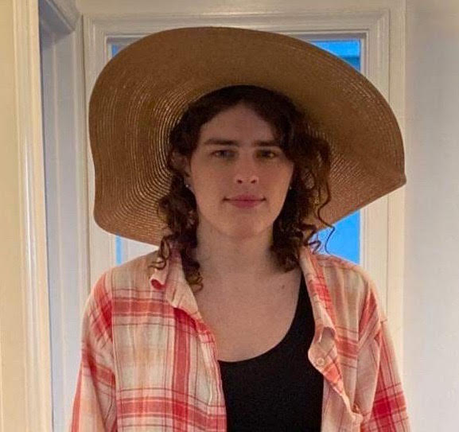

Hi, I'm Summer Eldridge! I’m a Math PhD student at the City University New York Graduate Center (CUNY GC). My research interests lie mostly in geometry and topology, especially in low dimensions, with previous work in probability. You can email me at seldridge (at) gradcenter.cuny.edu.
Current fixation: isometries and point groups
